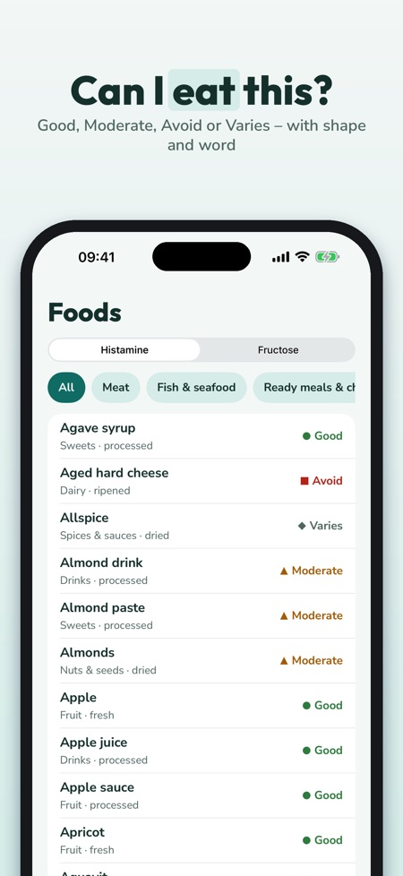
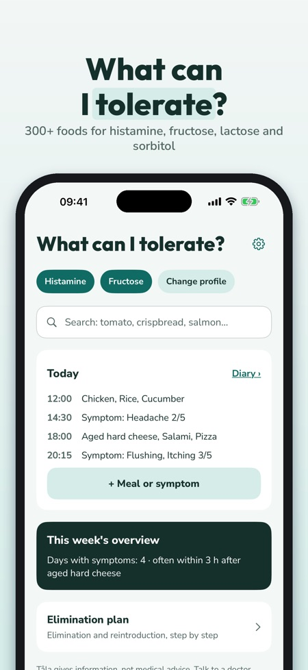
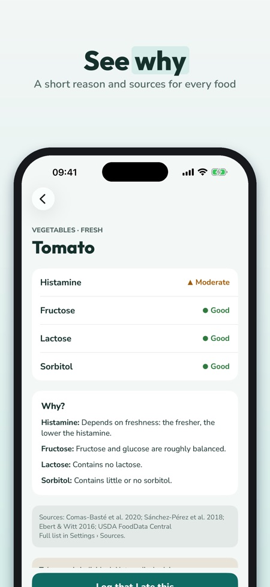

Food intolerance list & diary. Can I eat this? 300+ foods rated for histamine, fructose, lactose and sorbitol – Nordic foods, sources and a diary for meals and symptoms.



Can I eat this? Tåla answers for histamine, fructose, lactose and sorbitol – in Swedish, Norwegian, Danish, Finnish and English.
No account – everything stays on your phone. Fructose, lactose and sorbitol belong to the FODMAP groups; Tåla shows no portion values.
FOOD LIST WITH 300+ FOODS
• Nordic foods: crispbread, rye bread, pickled herring, gravlax, cultured milk, brown whey cheese, lingonberry, swede, liquorice and much more
• A rating per intolerance: Good, Moderate, Avoid or Varies – with colour, shape and word
• Why? A short reason, e.g. aged, fermented or more fructose than glucose
• Sources for every food; where sources disagree, it says "Varies"
MY PROFILE AND SEARCH
• Choose your intolerances – the list and search show what matters to you
• Search with everyday words and synonyms
MY SAFE FOODS
• Save what you tolerate and what you avoid
• "Show in shop": a large list to show the waiter or take to the shop
DIARY
• Log meals from the list or in your own words, and symptoms with a strength of 1–5
• This week's overview: symptoms per day and what you most often ate within 3 hours before – a description of your notes, not a diagnosis
ELIMINATION PLAN
• Eliminate, reintroduce, own list – phases you plan with your doctor or dietitian
• Reintroduction log
30 OWN RECIPES
• Nordic everyday dishes, filtered by your profile
PDF FOR YOUR DOCTOR OR DIETITIAN
• Diary, safe lists and log as a PDF via the share sheet
TÅLA PLUS
Without a purchase: one intolerance, search, 50 foods with full detail and 7 days of diary. Tåla Plus opens all intolerances, the full list, unlimited diary, weekly overview, elimination plan, recipes and PDF. Choose yearly (the first 7 days at no cost for new subscribers, then renews automatically, cancel any time in your App Store settings) or lifetime (one-time purchase).
IMPORTANT
Tåla is an information app, not a medical device. It does not diagnose and does not replace a doctor or dietitian. Ratings are general guidance and tolerance is individual.
The diary and lists are stored only on your phone. No account.